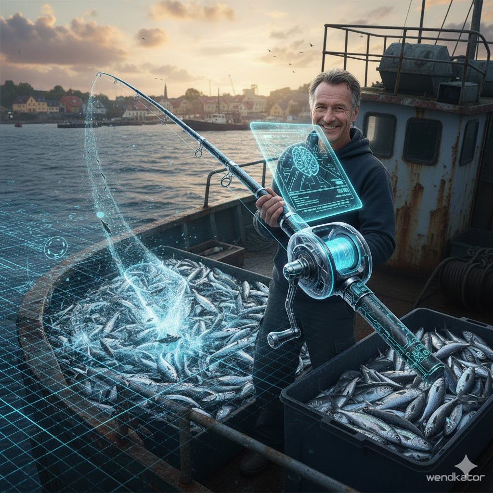

Niesamowita historia Krystiana R.
Krystian R. znał smak porażki. Był właścicielem niewielkiej, rodzinnej przetwórni ryb w małej nadmorskiej miejscowości. Przez pokolenia utrzymywali się z połowów, ale w ostatnich latach, ryby... po prostu zniknęły. Poławianie zajmowało całe dnie, a łowiska były puste. Zobowiązania rosły, pracownicy się niecierpliwili, a Krystian codziennie musiał patrzeć na zatroskaną twarz żony. Groziło im zamknięcie firmy i bankructwo - rodzinnej spuścizny i jedynego źródła utrzymania dla kilkunastu rodzin.
Pewnego mroźnego poranka Krystian podjął ostatnią, desperacką decyzję. Pożyczył ostatnie pieniądze, sprzedał stary skuter i kupił Wendkator 3000. Wędka, która obiecywała 500 ryb na minutę, wydawała się albo cudem, albo oszustwem.
Zabrał Wendkatora 3000 na swój stary, zardzewiały kuter. Wrzucił inteligentne kołowrotki do lodowatej wody i włączył Sonar Głębinowy HD. Zamiast szukać, po raz pierwszy widział: dużą ławicę ukrytą głęboko, o której żadne tradycyjne sonary nawet nie śniły.
Włączył tryb automatyczny.
To, co wydarzyło się potem, Krystian nazywał "wędkarską apokalipsą". Wędka ożywiona niebieskim blaskiem działała z niewyobrażalną precyzją. Co chwilę słychać było charakterystyczny szum zacięcia, a lśniące ryby w tempie taśmy produkcyjnej lądowały w specjalnym pojemniku sortującym.
Po zaledwie dwudziestu minutach Wendkator 3000 zatrzymał się. Krystian spojrzał na kuter. Miał więcej ryb niż przez ostatni tydzień.
Następnego dnia, po raz pierwszy od miesięcy, przetwórnia Krystiana pracowała na pełnych obrotach. Po trzech dniach nie tylko spłacił pożyczki, ale miał wystarczająco dużo surowca, by podpisać nowy, lukratywny kontrakt z siecią supermarketów.
Wendkator 3000 uratował Krystiana R. przed bankructwem. Uratował miejsca pracy dla jego załogi. Uratował dom jego rodzinie.
Dziś Krystian jest regionalnym potentatem rybnym. Jego kuter, choć wciąż ten sam, wypływa co rano, a Krystian, zamiast walczyć o każdą sztukę, ze spokojem nadzoruje swojego niezawodnego Wendkatora 3000.
To nie jest tylko wędka. To maszyna ratująca życie, która udowodniła, że technologia w rękach zdesperowanego człowieka może odwrócić każdy los.- Krystian R.
